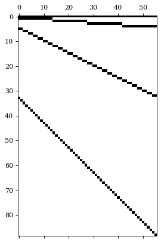
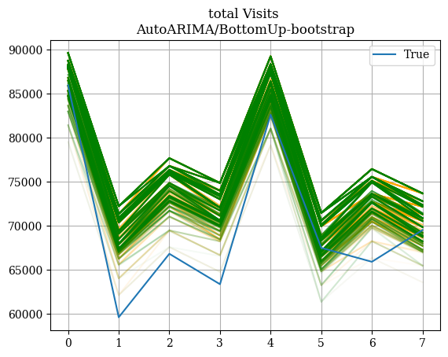

# %%capture
# !pip install hierarchicalforecast
# !pip install -U numba statsforecast datasetsforecastProbabilistic Forecast Evaluation
Hierarchical Forecast’s reconciliation and evaluation.
This notebook offers a step to step guide to create a hierarchical forecasting pipeline.
In the pipeline we will use HierarchicalForecast and StatsForecast core class, to create base predictions, reconcile and evaluate them.
We will use the TourismL dataset that summarizes large Australian national visitor survey.
Outline 1. Installing Packages 2. Prepare TourismL dataset - Read and aggregate - StatsForecast’s Base Predictions 3. Reconciliar 4. Evaluar

1. Installing HierarchicalForecast
We assume you have StatsForecast and HierarchicalForecast already installed, if not check this guide for instructions on how to install HierarchicalForecast.
import os
import numpy as np
import pandas as pd
import matplotlib.pyplot as plt
from statsforecast.core import StatsForecast
from statsforecast.models import AutoARIMA, Naive
from hierarchicalforecast.core import HierarchicalReconciliation
from hierarchicalforecast.evaluation import HierarchicalEvaluation
from hierarchicalforecast.methods import BottomUp, TopDown, MinTrace, ERM
from hierarchicalforecast.utils import is_strictly_hierarchical
from hierarchicalforecast.utils import HierarchicalPlot, CodeTimer
from hierarchicalforecast.evaluation import scaled_crps, msse, energy_score
from datasetsforecast.hierarchical import HierarchicalData, HierarchicalInfo/Users/cchallu/opt/anaconda3/envs/hierarchicalforecast/lib/python3.10/site-packages/statsforecast/core.py:21: TqdmWarning: IProgress not found. Please update jupyter and ipywidgets. See https://ipywidgets.readthedocs.io/en/stable/user_install.html
from tqdm.autonotebook import tqdm2. Preparing TourismL Dataset
2.1 Read Hierarchical Dataset
# ['Labour', 'Traffic', 'TourismSmall', 'TourismLarge', 'Wiki2']
dataset = 'TourismSmall' # 'TourismLarge'
verbose = True
intervals_method = 'bootstrap'
LEVEL = np.arange(0, 100, 2)
qs = [[50-lv/2, 50+lv/2] for lv in LEVEL]
QUANTILES = np.sort(np.concatenate(qs)/100)with CodeTimer('Read and Parse data ', verbose):
print(f'{dataset}')
if not os.path.exists('./data'):
os.makedirs('./data')
dataset_info = HierarchicalInfo[dataset]
Y_df, S_df, tags = HierarchicalData.load(directory=f'./data/{dataset}', group=dataset)
Y_df['ds'] = pd.to_datetime(Y_df['ds'])
# Train/Test Splits
horizon = dataset_info.horizon
seasonality = dataset_info.seasonality
Y_test_df = Y_df.groupby('unique_id').tail(horizon)
Y_train_df = Y_df.drop(Y_test_df.index)
Y_test_df = Y_test_df.set_index('unique_id')
Y_train_df = Y_train_df.set_index('unique_id')TourismSmall
Code block 'Read and Parse data ' took: 0.99873 seconds100%|██████████| 1.30M/1.30M [00:00<00:00, 2.74MiB/s]
INFO:datasetsforecast.utils:Successfully downloaded datasets.zip, 1297279, bytes.
INFO:datasetsforecast.utils:Decompressing zip file...
INFO:datasetsforecast.utils:Successfully decompressed data/TourismSmall/hierarchical/datasets.zipdataset_info.seasonality4hplot = HierarchicalPlot(S=S_df, tags=tags)
hplot.plot_summing_matrix()
Y_train_df| ds | y | |
|---|---|---|
| unique_id | ||
| total | 1998-03-31 | 84503 |
| total | 1998-06-30 | 65312 |
| total | 1998-09-30 | 72753 |
| total | 1998-12-31 | 70880 |
| total | 1999-03-31 | 86893 |
| ... | ... | ... |
| nt-oth-noncity | 2003-12-31 | 132 |
| nt-oth-noncity | 2004-03-31 | 12 |
| nt-oth-noncity | 2004-06-30 | 40 |
| nt-oth-noncity | 2004-09-30 | 186 |
| nt-oth-noncity | 2004-12-31 | 144 |
2492 rows × 2 columns
2.2 StatsForecast’s Base Predictions
This cell computes the base predictions Y_hat_df for all the series in Y_df using StatsForecast’s AutoARIMA. Additionally we obtain insample predictions Y_fitted_df for the methods that require them.
with CodeTimer('Fit/Predict Model ', verbose):
# Read to avoid unnecesary AutoARIMA computation
yhat_file = f'./data/{dataset}/Y_hat.csv'
yfitted_file = f'./data/{dataset}/Y_fitted.csv'
if os.path.exists(yhat_file):
Y_hat_df = pd.read_csv(yhat_file)
Y_fitted_df = pd.read_csv(yfitted_file)
Y_hat_df = Y_hat_df.set_index('unique_id')
Y_fitted_df = Y_fitted_df.set_index('unique_id')
else:
fcst = StatsForecast(
df=Y_train_df,
models=[AutoARIMA(season_length=seasonality)],
fallback_model=[Naive()],
freq='M',
n_jobs=-1
)
Y_hat_df = fcst.forecast(h=horizon, fitted=True, level=LEVEL)
Y_fitted_df = fcst.forecast_fitted_values()
Y_hat_df.to_csv(yhat_file)
Y_fitted_df.to_csv(yfitted_file)Y_hat_df| ds | AutoARIMA | AutoARIMA-lo-98 | AutoARIMA-lo-96 | AutoARIMA-lo-94 | AutoARIMA-lo-92 | AutoARIMA-lo-90 | AutoARIMA-lo-88 | AutoARIMA-lo-86 | AutoARIMA-lo-84 | ... | AutoARIMA-hi-80 | AutoARIMA-hi-82 | AutoARIMA-hi-84 | AutoARIMA-hi-86 | AutoARIMA-hi-88 | AutoARIMA-hi-90 | AutoARIMA-hi-92 | AutoARIMA-hi-94 | AutoARIMA-hi-96 | AutoARIMA-hi-98 | |
|---|---|---|---|---|---|---|---|---|---|---|---|---|---|---|---|---|---|---|---|---|---|
| unique_id | |||||||||||||||||||||
| bus | 2005-01-31 | 9673.424805 | 7436.356445 | 7698.493652 | 7864.811523 | 7989.925781 | 8091.696289 | 8178.319336 | 8254.270508 | 8322.276367 | ... | 10905.793945 | 10962.725586 | 11024.573242 | 11092.579102 | 11168.530273 | 11255.153320 | 11356.923828 | 11482.038086 | 11648.356445 | 11910.493164 |
| bus | 2005-02-28 | 10393.900391 | 8156.831543 | 8418.968750 | 8585.287109 | 8710.401367 | 8812.171875 | 8898.794922 | 8974.746094 | 9042.751953 | ... | 11626.269531 | 11683.200195 | 11745.048828 | 11813.054688 | 11889.005859 | 11975.628906 | 12077.399414 | 12202.513672 | 12368.832031 | 12630.968750 |
| bus | 2005-03-31 | 12028.134766 | 9791.066406 | 10053.204102 | 10219.521484 | 10344.635742 | 10446.406250 | 10533.029297 | 10608.981445 | 10676.986328 | ... | 13260.503906 | 13317.435547 | 13379.283203 | 13447.289062 | 13523.240234 | 13609.863281 | 13711.633789 | 13836.748047 | 14003.066406 | 14265.203125 |
| bus | 2005-04-30 | 10995.679688 | 8758.610352 | 9020.748047 | 9187.065430 | 9312.179688 | 9413.951172 | 9500.574219 | 9576.525391 | 9644.531250 | ... | 12228.047852 | 12284.979492 | 12346.828125 | 12414.833008 | 12490.785156 | 12577.407227 | 12679.178711 | 12804.292969 | 12970.610352 | 13232.748047 |
| bus | 2005-05-31 | 9673.424805 | 7262.085449 | 7544.643555 | 7723.917480 | 7858.778320 | 7968.477539 | 8061.848633 | 8143.716797 | 8217.019531 | ... | 11001.796875 | 11063.164062 | 11129.830078 | 11203.132812 | 11285.000977 | 11378.372070 | 11488.071289 | 11622.932617 | 11802.206055 | 12084.764648 |
| ... | ... | ... | ... | ... | ... | ... | ... | ... | ... | ... | ... | ... | ... | ... | ... | ... | ... | ... | ... | ... | ... |
| wa-vfr-noncity | 2005-04-30 | 904.125549 | 463.371521 | 515.018616 | 547.787048 | 572.437439 | 592.488647 | 609.555359 | 624.519531 | 637.918213 | ... | 1146.930542 | 1158.147339 | 1170.332886 | 1183.731567 | 1198.695679 | 1215.762451 | 1235.813721 | 1260.464111 | 1293.232544 | 1344.879517 |
| wa-vfr-noncity | 2005-05-31 | 904.125549 | 457.607361 | 509.929901 | 543.126831 | 568.099670 | 588.413086 | 605.703003 | 620.862854 | 634.436707 | ... | 1150.105957 | 1161.469482 | 1173.814331 | 1187.388184 | 1202.548096 | 1219.838013 | 1240.151489 | 1265.124268 | 1298.321167 | 1350.643677 |
| wa-vfr-noncity | 2005-06-30 | 904.125549 | 451.916687 | 504.906036 | 538.526062 | 563.817139 | 584.389465 | 601.899719 | 617.252808 | 630.999634 | ... | 1153.240967 | 1164.749268 | 1177.251465 | 1190.998291 | 1206.351440 | 1223.861694 | 1244.433960 | 1269.724976 | 1303.345093 | 1356.334473 |
| wa-vfr-noncity | 2005-07-31 | 904.125549 | 446.296722 | 499.944611 | 533.982483 | 559.587830 | 580.415833 | 598.143738 | 613.687622 | 627.605286 | ... | 1156.336914 | 1167.988159 | 1180.645752 | 1194.563477 | 1210.107422 | 1227.835327 | 1248.663208 | 1274.268677 | 1308.306519 | 1361.954346 |
| wa-vfr-noncity | 2005-08-31 | 904.125549 | 440.744904 | 495.043365 | 529.493958 | 555.409851 | 576.490417 | 594.433289 | 610.165649 | 624.252136 | ... | 1159.395264 | 1171.187866 | 1183.999023 | 1198.085449 | 1213.817871 | 1231.760742 | 1252.841309 | 1278.757080 | 1313.207764 | 1367.506226 |
712 rows × 102 columns
Y_fitted_df| ds | y | AutoARIMA | AutoARIMA-lo-98 | AutoARIMA-lo-96 | AutoARIMA-lo-94 | AutoARIMA-lo-92 | AutoARIMA-lo-90 | AutoARIMA-lo-88 | AutoARIMA-lo-86 | ... | AutoARIMA-hi-80 | AutoARIMA-hi-82 | AutoARIMA-hi-84 | AutoARIMA-hi-86 | AutoARIMA-hi-88 | AutoARIMA-hi-90 | AutoARIMA-hi-92 | AutoARIMA-hi-94 | AutoARIMA-hi-96 | AutoARIMA-hi-98 | |
|---|---|---|---|---|---|---|---|---|---|---|---|---|---|---|---|---|---|---|---|---|---|
| unique_id | |||||||||||||||||||||
| bus | 1998-03-31 | 9815.0 | 9805.184570 | 7568.648926 | 7830.724121 | 7997.001953 | 8122.086426 | 8223.833008 | 8310.435547 | 8386.369141 | ... | 11037.260742 | 11094.178711 | 11156.011719 | 11224.000977 | 11299.934570 | 11386.537109 | 11488.283203 | 11613.368164 | 11779.646484 | 12041.720703 |
| bus | 1998-06-30 | 11823.0 | 11811.176758 | 9574.640625 | 9836.715820 | 10002.994141 | 10128.078125 | 10229.825195 | 10316.427734 | 10392.361328 | ... | 13043.252930 | 13100.169922 | 13162.003906 | 13229.993164 | 13305.926758 | 13392.528320 | 13494.275391 | 13619.360352 | 13785.637695 | 14047.712891 |
| bus | 1998-09-30 | 13565.0 | 13551.434570 | 11314.899414 | 11576.973633 | 11743.251953 | 11868.336914 | 11970.083008 | 12056.685547 | 12132.619141 | ... | 14783.510742 | 14840.428711 | 14902.261719 | 14970.250977 | 15046.184570 | 15132.787109 | 15234.533203 | 15359.618164 | 15525.896484 | 15787.970703 |
| bus | 1998-12-31 | 11478.0 | 11466.522461 | 9229.986328 | 9492.060547 | 9658.338867 | 9783.423828 | 9885.169922 | 9971.772461 | 10047.706055 | ... | 12698.597656 | 12755.515625 | 12817.348633 | 12885.337891 | 12961.271484 | 13047.874023 | 13149.620117 | 13274.705078 | 13440.983398 | 13703.057617 |
| bus | 1999-03-31 | 10027.0 | 9845.011719 | 7608.475586 | 7870.550781 | 8036.828613 | 8161.913086 | 8263.660156 | 8350.262695 | 8426.195312 | ... | 11077.086914 | 11134.004883 | 11195.838867 | 11263.828125 | 11339.760742 | 11426.363281 | 11528.110352 | 11653.194336 | 11819.472656 | 12081.547852 |
| ... | ... | ... | ... | ... | ... | ... | ... | ... | ... | ... | ... | ... | ... | ... | ... | ... | ... | ... | ... | ... | ... |
| wa-vfr-noncity | 2003-12-31 | 1177.0 | 927.351196 | 504.362732 | 553.928040 | 585.375671 | 609.032471 | 628.275513 | 644.654297 | 659.015320 | ... | 1160.369507 | 1171.134155 | 1182.828491 | 1195.687012 | 1210.048096 | 1226.426880 | 1245.669922 | 1269.326660 | 1300.774292 | 1350.339600 |
| wa-vfr-noncity | 2004-03-31 | 956.0 | 969.565552 | 546.577087 | 596.142456 | 627.590027 | 651.246887 | 670.489868 | 686.868652 | 701.229675 | ... | 1202.583862 | 1213.348511 | 1225.042847 | 1237.901489 | 1252.262451 | 1268.641235 | 1287.884277 | 1311.541016 | 1342.988647 | 1392.554077 |
| wa-vfr-noncity | 2004-06-30 | 772.0 | 967.268921 | 544.280457 | 593.845764 | 625.293396 | 648.950195 | 668.193237 | 684.572021 | 698.933044 | ... | 1200.287109 | 1211.051880 | 1222.746216 | 1235.604736 | 1249.965820 | 1266.344604 | 1285.587646 | 1309.244385 | 1340.692017 | 1390.257324 |
| wa-vfr-noncity | 2004-09-30 | 885.0 | 934.251831 | 511.263336 | 560.828674 | 592.276306 | 615.933105 | 635.176086 | 651.554932 | 665.915955 | ... | 1167.270020 | 1178.034790 | 1189.729126 | 1202.587646 | 1216.948730 | 1233.327515 | 1252.570557 | 1276.227295 | 1307.674927 | 1357.240234 |
| wa-vfr-noncity | 2004-12-31 | 797.0 | 925.923462 | 502.934998 | 552.500305 | 583.947937 | 607.604736 | 626.847778 | 643.226562 | 657.587585 | ... | 1158.941772 | 1169.706421 | 1181.400757 | 1194.259277 | 1208.620361 | 1224.999146 | 1244.242188 | 1267.898926 | 1299.346558 | 1348.911865 |
2492 rows × 103 columns
3. Reconciliate Predictions
with CodeTimer('Reconcile Predictions ', verbose):
if is_strictly_hierarchical(S=S_df.values.astype(np.float32),
tags={key: S_df.index.get_indexer(val) for key, val in tags.items()}):
reconcilers = [
BottomUp(),
TopDown(method='average_proportions'),
TopDown(method='proportion_averages'),
MinTrace(method='ols'),
MinTrace(method='wls_var'),
MinTrace(method='mint_shrink'),
#ERM(method='reg_bu', lambda_reg=100) # Extremely inneficient
ERM(method='closed')
]
else:
reconcilers = [
BottomUp(),
MinTrace(method='ols'),
MinTrace(method='wls_var'),
MinTrace(method='mint_shrink'),
#ERM(method='reg_bu', lambda_reg=100) # Extremely inneficient
ERM(method='closed')
]
hrec = HierarchicalReconciliation(reconcilers=reconcilers)
Y_rec_df = hrec.bootstrap_reconcile(Y_hat_df=Y_hat_df,
Y_df=Y_fitted_df,
S_df=S_df, tags=tags,
level=LEVEL,
intervals_method=intervals_method,
num_samples=10, num_seeds=10)
# Matching Y_test/Y_rec/S index ordering
Y_test_df = Y_test_df.reset_index()
Y_test_df.unique_id = Y_test_df.unique_id.astype('category')
Y_test_df.unique_id = Y_test_df.unique_id.cat.set_categories(S_df.index)
Y_test_df = Y_test_df.sort_values(by=['unique_id', 'ds'])
Y_rec_df = Y_rec_df.reset_index()
Y_rec_df.unique_id = Y_rec_df.unique_id.astype('category')
Y_rec_df.unique_id = Y_rec_df.unique_id.cat.set_categories(S_df.index)
Y_rec_df = Y_rec_df.sort_values(by=['seed', 'unique_id', 'ds'])
# Parsing model level columns
flat_cols = list(hrec.level_names.keys())
for model in hrec.level_names:
flat_cols += hrec.level_names[model]
for model in hrec.sample_names:
flat_cols += hrec.sample_names[model]
y_rec = Y_rec_df[flat_cols]
model_columns = y_rec.columns
n_series = len(S_df)
n_seeds = len(Y_rec_df.seed.unique())
y_rec = y_rec.values.reshape(n_seeds, n_series, horizon, len(model_columns))
y_test = Y_test_df['y'].values.reshape(n_series, horizon)
y_train = Y_train_df['y'].values.reshape(n_series, -1)Code block 'Reconcile Predictions ' took: 11.73492 seconds# Qualitative evaluation, of parsed quantiles
row_idx = 0
seed_idx = 0
col_idxs = model_columns.get_indexer(hrec.level_names['AutoARIMA/BottomUp'])
for i, col in enumerate(col_idxs):
plt.plot(y_rec[seed_idx, row_idx,:,col], color='orange', alpha=i/100)
for i, col in enumerate(col_idxs):
plt.plot(y_rec[seed_idx+1, row_idx,:,col], color='green', alpha=i/100)
plt.plot(y_test[row_idx,:], label='True')
plt.title(f'{S_df.index[row_idx]} Visits \n' + \
f'AutoARIMA/BottomUp-{intervals_method}')
plt.legend()
plt.grid()
plt.show()
plt.close()
#Y_rec_df
td_levels = hrec.level_names['AutoARIMA/TopDown_method-average_proportions']
Y_rec_df[td_levels]| AutoARIMA/TopDown_method-average_proportions-lo-98 | AutoARIMA/TopDown_method-average_proportions-lo-96 | AutoARIMA/TopDown_method-average_proportions-lo-94 | AutoARIMA/TopDown_method-average_proportions-lo-92 | AutoARIMA/TopDown_method-average_proportions-lo-90 | AutoARIMA/TopDown_method-average_proportions-lo-88 | AutoARIMA/TopDown_method-average_proportions-lo-86 | AutoARIMA/TopDown_method-average_proportions-lo-84 | AutoARIMA/TopDown_method-average_proportions-lo-82 | AutoARIMA/TopDown_method-average_proportions-lo-80 | ... | AutoARIMA/TopDown_method-average_proportions-hi-80 | AutoARIMA/TopDown_method-average_proportions-hi-82 | AutoARIMA/TopDown_method-average_proportions-hi-84 | AutoARIMA/TopDown_method-average_proportions-hi-86 | AutoARIMA/TopDown_method-average_proportions-hi-88 | AutoARIMA/TopDown_method-average_proportions-hi-90 | AutoARIMA/TopDown_method-average_proportions-hi-92 | AutoARIMA/TopDown_method-average_proportions-hi-94 | AutoARIMA/TopDown_method-average_proportions-hi-96 | AutoARIMA/TopDown_method-average_proportions-hi-98 | |
|---|---|---|---|---|---|---|---|---|---|---|---|---|---|---|---|---|---|---|---|---|---|
| 0 | 80750.389920 | 80750.389920 | 80750.389920 | 82299.061781 | 82299.061781 | 82299.061781 | 82600.022716 | 82600.022716 | 82600.022716 | 82763.007090 | ... | 88248.624229 | 88248.624229 | 88248.624229 | 88248.624229 | 88384.153447 | 90507.444522 | 90507.444522 | 90507.444522 | 90507.444522 | 90507.444522 |
| 1 | 61825.843210 | 61825.843210 | 61825.843210 | 61825.843210 | 61825.843210 | 61825.843210 | 63374.515072 | 63374.515072 | 63374.515072 | 63374.515072 | ... | 68196.499405 | 68196.499405 | 68286.705654 | 69324.077520 | 69324.077520 | 69437.018534 | 71582.897812 | 71582.897812 | 71582.897812 | 71582.897812 |
| 2 | 68249.624404 | 68249.624404 | 68249.624404 | 68249.624404 | 69798.296266 | 69798.296266 | 69798.296266 | 69798.296266 | 69798.296266 | 69798.296266 | ... | 74620.280598 | 74620.280598 | 74620.280598 | 74699.211067 | 75747.858714 | 75747.858714 | 75747.858714 | 75815.623322 | 78006.679006 | 78006.679006 |
| 3 | 67456.030661 | 67456.030661 | 67456.030661 | 67456.030661 | 69004.702523 | 69004.702523 | 69004.702523 | 69004.702523 | 69004.702523 | 69305.663457 | ... | 73939.444667 | 74954.264971 | 74954.264971 | 74954.264971 | 74954.264971 | 74954.264971 | 75044.617782 | 77213.085263 | 77213.085263 | 77213.085263 |
| 4 | 80371.819611 | 80371.819611 | 80371.819611 | 80371.819611 | 80371.819611 | 81827.571161 | 81920.491472 | 81920.491472 | 81920.491472 | 81920.491472 | ... | 87870.053920 | 87870.053920 | 87870.053920 | 87870.053920 | 88005.583138 | 90128.874213 | 90128.874213 | 90128.874213 | 90128.874213 | 90128.874213 |
| ... | ... | ... | ... | ... | ... | ... | ... | ... | ... | ... | ... | ... | ... | ... | ... | ... | ... | ... | ... | ... | ... |
| 7115 | 132.959504 | 132.959504 | 132.959504 | 132.959504 | 132.959504 | 135.828870 | 136.012021 | 136.012021 | 136.012021 | 136.545910 | ... | 147.738932 | 147.738932 | 147.738932 | 152.191189 | 152.191189 | 152.191189 | 152.191189 | 152.191189 | 152.191189 | 152.191189 |
| 7116 | 158.417227 | 158.417227 | 158.417227 | 158.417227 | 158.417227 | 161.469743 | 161.469743 | 161.469743 | 161.469743 | 162.062953 | ... | 170.974136 | 171.174163 | 173.196654 | 173.196654 | 173.196654 | 173.419267 | 177.648912 | 177.648912 | 177.648912 | 177.648912 |
| 7117 | 122.066765 | 122.066765 | 125.119281 | 125.119281 | 125.119281 | 125.119281 | 125.712492 | 125.712492 | 125.712492 | 125.712492 | ... | 134.623675 | 134.623675 | 134.801476 | 136.846192 | 136.846192 | 136.846192 | 137.024283 | 141.298450 | 141.298450 | 141.298450 |
| 7118 | 134.467576 | 134.467576 | 134.467576 | 134.467576 | 137.520093 | 137.520093 | 137.520093 | 137.520093 | 138.113303 | 138.113303 | ... | 145.762241 | 145.875843 | 147.202288 | 149.247004 | 149.247004 | 149.247004 | 149.425094 | 153.699262 | 153.699262 | 153.699262 |
| 7119 | 135.996894 | 136.027420 | 136.027420 | 136.027420 | 136.027420 | 136.027420 | 136.027420 | 136.573173 | 136.620630 | 136.620630 | ... | 145.531813 | 145.531813 | 145.709614 | 147.754331 | 147.754331 | 147.754331 | 147.932421 | 152.206588 | 152.206588 | 152.206588 |
7120 rows × 100 columns
4. Evaluation
with CodeTimer('Evaluate Models CRPS ', verbose):
crps_results = {'Dataset': [dataset] * len(['Overall'] + list(tags.keys())),
'Level': ['Overall'] + list(tags.keys()),}
for model in hrec.level_names.keys():
crps_results[model] = []
for level in crps_results['Level']:
if level=='Overall':
row_idxs = np.arange(len(S_df))
else:
row_idxs = S_df.index.get_indexer(tags[level])
col_idxs = model_columns.get_indexer(hrec.level_names[model])
_y = y_test[row_idxs,:]
_y_rec_seeds = y_rec[:,row_idxs,:,:][:,:,:,col_idxs]
level_model_crps = []
for seed_idx in range(y_rec.shape[0]):
_y_rec = _y_rec_seeds[seed_idx,:,:,:]
level_model_crps.append(scaled_crps(y=_y, y_hat=_y_rec,
quantiles=QUANTILES))
level_model_crps = f'{np.mean(level_model_crps):.4f}±{(1.96 * np.std(level_model_crps)):.4f}'
crps_results[model].append(level_model_crps)
crps_results = pd.DataFrame(crps_results)
crps_resultsCode block 'Evaluate Models CRPS ' took: 1.13514 seconds| Dataset | Level | AutoARIMA/BottomUp | AutoARIMA/TopDown_method-average_proportions | AutoARIMA/TopDown_method-proportion_averages | AutoARIMA/MinTrace_method-ols | AutoARIMA/MinTrace_method-wls_var | AutoARIMA/MinTrace_method-mint_shrink | AutoARIMA/ERM_method-closed_lambda_reg-0.01 | |
|---|---|---|---|---|---|---|---|---|---|
| 0 | TourismSmall | Overall | 0.0895±0.0012 | 0.1195±0.0008 | 0.1197±0.0008 | 0.0927±0.0010 | 0.0890±0.0010 | 0.0898±0.0009 | 0.1116±0.0015 |
| 1 | TourismSmall | Country | 0.0481±0.0016 | 0.0479±0.0011 | 0.0479±0.0011 | 0.0504±0.0010 | 0.0510±0.0011 | 0.0512±0.0011 | 0.0525±0.0015 |
| 2 | TourismSmall | Country/Purpose | 0.0699±0.0016 | 0.0928±0.0009 | 0.0931±0.0009 | 0.0804±0.0012 | 0.0724±0.0012 | 0.0741±0.0012 | 0.0927±0.0015 |
| 3 | TourismSmall | Country/Purpose/State | 0.1085±0.0011 | 0.1575±0.0009 | 0.1579±0.0009 | 0.1082±0.0011 | 0.1043±0.0009 | 0.1049±0.0008 | 0.1325±0.0018 |
| 4 | TourismSmall | Country/Purpose/State/CityNonCity | 0.1316±0.0012 | 0.1799±0.0008 | 0.1800±0.0008 | 0.1319±0.0013 | 0.1282±0.0011 | 0.1290±0.0010 | 0.1685±0.0029 |
with CodeTimer('Evaluate Models MSSE ', verbose):
msse_results = {'Dataset': [dataset] * len(['Overall'] + list(tags.keys())),
'Level': ['Overall'] + list(tags.keys()),}
for model in hrec.level_names.keys():
msse_results[model] = []
for level in msse_results['Level']:
if level=='Overall':
row_idxs = np.arange(len(S_df))
else:
row_idxs = S_df.index.get_indexer(tags[level])
col_idx = model_columns.get_loc(model)
_y = y_test[row_idxs,:]
_y_train = y_train[row_idxs,:]
_y_hat_seeds = y_rec[:,row_idxs,:,:][:,:,:,col_idx]
level_model_msse = []
for seed_idx in range(y_rec.shape[0]):
_y_hat = _y_hat_seeds[seed_idx,:,:]
level_model_msse.append(msse(y=_y, y_hat=_y_hat, y_train=_y_train))
#level_model_msse = f'{np.mean(level_model_msse):.4f}±{(1.96 * np.std(level_model_msse)):.4f}'
level_model_msse = f'{np.mean(level_model_msse):.4f}'
msse_results[model].append(level_model_msse)
msse_results = pd.DataFrame(msse_results)
msse_resultsCode block 'Evaluate Models MSSE ' took: 0.73303 seconds| Dataset | Level | AutoARIMA/BottomUp | AutoARIMA/TopDown_method-average_proportions | AutoARIMA/TopDown_method-proportion_averages | AutoARIMA/MinTrace_method-ols | AutoARIMA/MinTrace_method-wls_var | AutoARIMA/MinTrace_method-mint_shrink | AutoARIMA/ERM_method-closed_lambda_reg-0.01 | |
|---|---|---|---|---|---|---|---|---|---|
| 0 | TourismSmall | Overall | 0.2530 | 0.3628 | 0.3649 | 0.3039 | 0.2789 | 0.2822 | 0.3942 |
| 1 | TourismSmall | Country | 0.2564 | 0.3180 | 0.3180 | 0.3522 | 0.3381 | 0.3394 | 0.4117 |
| 2 | TourismSmall | Country/Purpose | 0.2018 | 0.3178 | 0.3203 | 0.2557 | 0.2122 | 0.2175 | 0.3346 |
| 3 | TourismSmall | Country/Purpose/State | 0.3231 | 0.5077 | 0.5114 | 0.2943 | 0.2858 | 0.2890 | 0.4534 |
| 4 | TourismSmall | Country/Purpose/State/CityNonCity | 0.3423 | 0.5047 | 0.5099 | 0.3238 | 0.3083 | 0.3115 | 0.4791 |
with CodeTimer('Evaluate Models EScore', verbose):
energy_results = {'Dataset': [dataset] * len(['Overall'] + list(tags.keys())),
'Level': ['Overall'] + list(tags.keys()),}
for model in hrec.sample_names.keys():
energy_results[model] = []
for level in energy_results['Level']:
if level=='Overall':
row_idxs = np.arange(len(S_df))
else:
row_idxs = S_df.index.get_indexer(tags[level])
col_idxs = model_columns.get_indexer(hrec.sample_names[model])
_y = y_test[row_idxs,:]
_y_sample1 = y_rec[0,row_idxs,:,:][:,:,col_idxs[:len(col_idxs)//2]]
_y_sample2 = y_rec[0,row_idxs,:,:][:,:,col_idxs[len(col_idxs)//2:]]
level_model_energy = energy_score(y=_y,
y_sample1=_y_sample1,
y_sample2=_y_sample2,
beta=2)
energy_results[model].append(level_model_energy)
energy_results = pd.DataFrame(energy_results)
energy_resultsCode block 'Evaluate Models EScore' took: 0.19443 seconds| Dataset | Level | AutoARIMA/BottomUp | AutoARIMA/TopDown_method-average_proportions | AutoARIMA/TopDown_method-proportion_averages | AutoARIMA/MinTrace_method-ols | AutoARIMA/MinTrace_method-wls_var | AutoARIMA/MinTrace_method-mint_shrink | AutoARIMA/ERM_method-closed_lambda_reg-0.01 | |
|---|---|---|---|---|---|---|---|---|---|
| 0 | TourismSmall | Overall | 6.874103e+07 | 7.917294e+07 | 7.962361e+07 | 6.930268e+07 | 6.914837e+07 | 6.955018e+07 | 8.235776e+07 |
| 1 | TourismSmall | Country | 3.292999e+07 | 2.757131e+07 | 2.757129e+07 | 3.081254e+07 | 3.392861e+07 | 3.353851e+07 | 3.350023e+07 |
| 2 | TourismSmall | Country/Purpose | 1.894485e+07 | 2.661024e+07 | 2.683828e+07 | 2.218952e+07 | 1.932895e+07 | 1.984161e+07 | 2.681792e+07 |
| 3 | TourismSmall | Country/Purpose/State | 9.393103e+06 | 1.408613e+07 | 1.419471e+07 | 9.016056e+06 | 8.778983e+06 | 8.928542e+06 | 1.211747e+07 |
| 4 | TourismSmall | Country/Purpose/State/CityNonCity | 7.473085e+06 | 1.090527e+07 | 1.101934e+07 | 7.284562e+06 | 7.111832e+06 | 7.241519e+06 | 9.922145e+06 |
References
- Syama Sundar Rangapuram, Lucien D Werner, Konstantinos Benidis, Pedro Mercado, Jan Gasthaus, Tim Januschowski. (2021). "End-to-End Learning of Coherent Probabilistic Forecasts for Hierarchical Time Series". Proceedings of the 38th International Conference on Machine Learning (ICML).
- Kin G. Olivares, O. Nganba Meetei, Ruijun Ma, Rohan Reddy, Mengfei Cao, Lee Dicker (2022). “Probabilistic Hierarchical Forecasting with Deep Poisson Mixtures”. Submitted to the International Journal Forecasting, Working paper available at arxiv.
If you find the code useful, please ⭐ us on Github